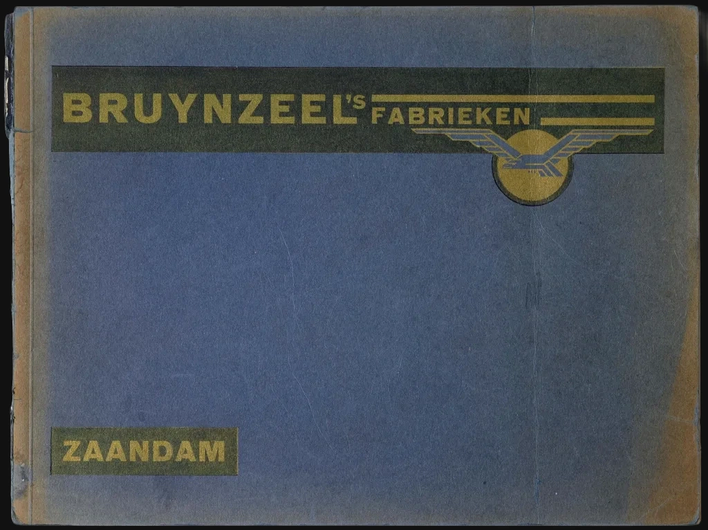
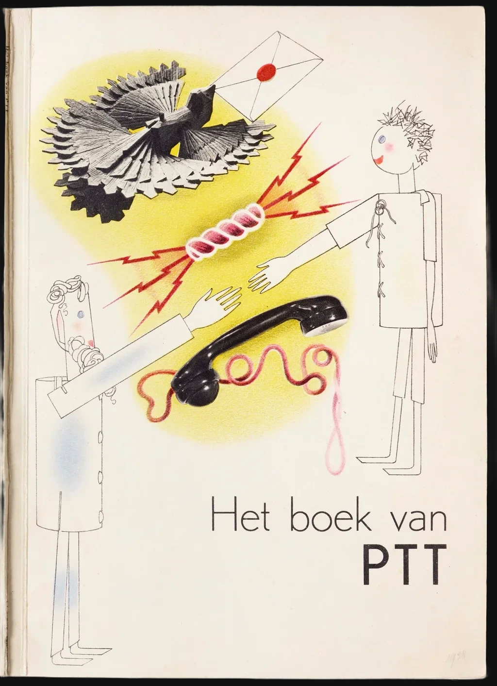
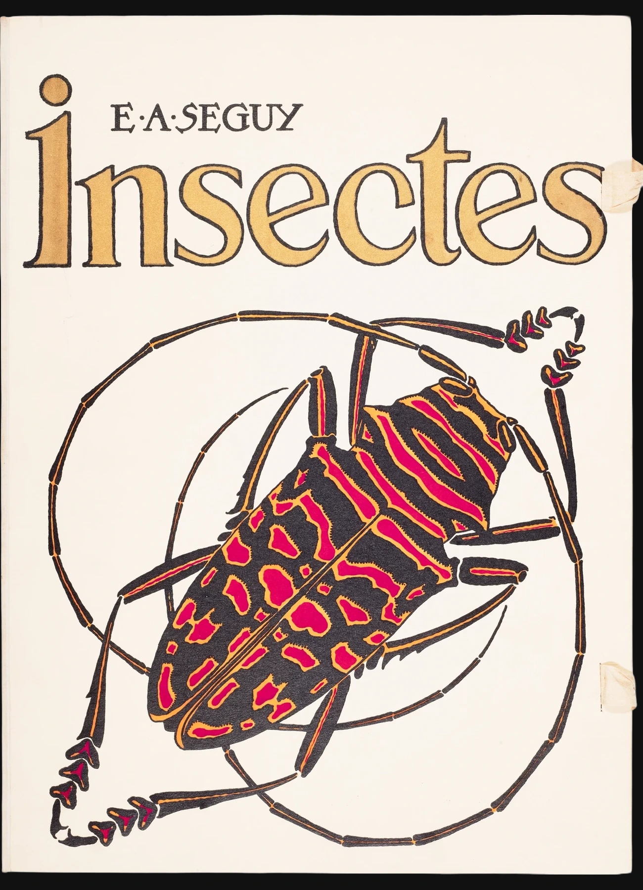
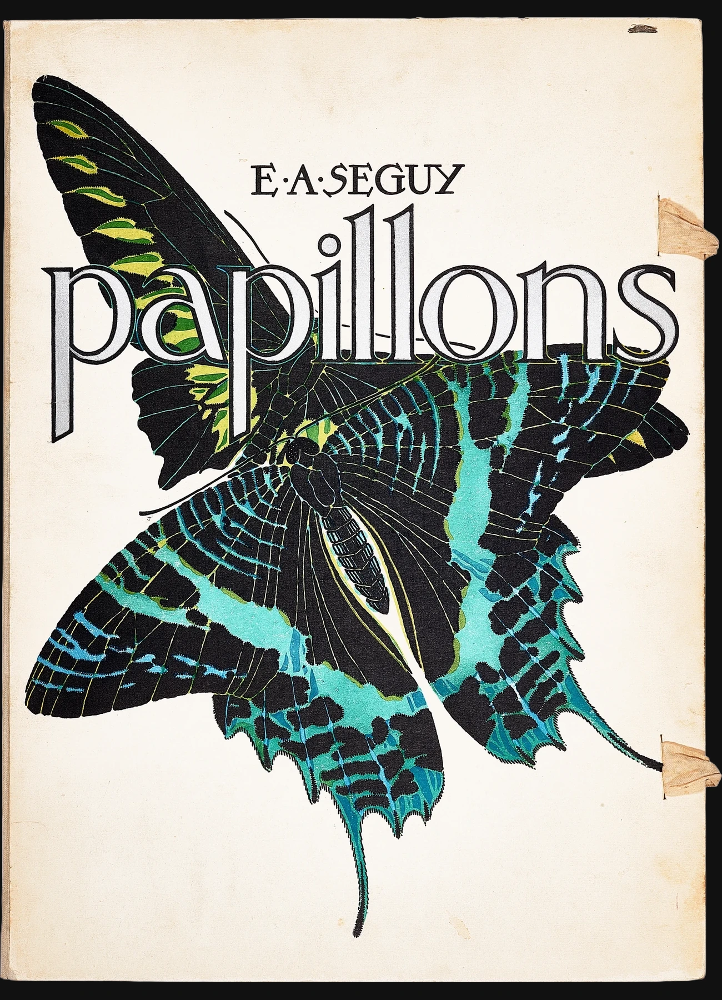
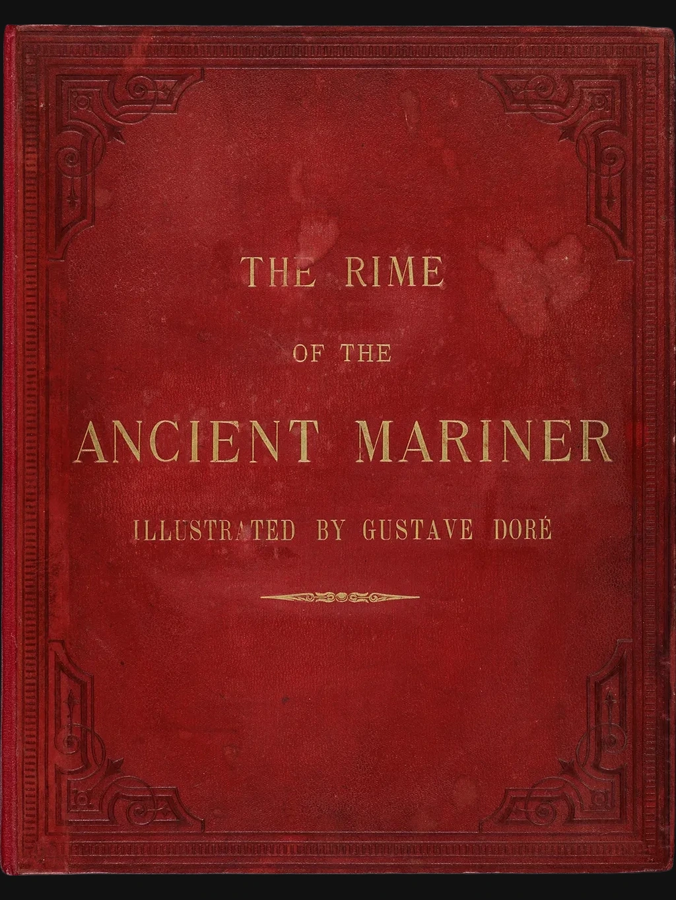

Bruynzeel's Fabrieken, 1931
Vilmos Huszár, a founder of the Dutch avant-garde De Stijl movement, combined photography and typography to tell the history of the Bruynzeel wood factory in this promotional album.

Het boek van PTT, 1938
Graphic and industrial designer Piet Zwart created this book to introduce schoolchildren to the Dutch postal, telegraph, and telephone services, using graphics inspired by avant-garde influences, such as De Stijl and Constructivism.
Industrial Design, 1940
An early consulting designer, Harold Van Doren wrote this practical, how-to manual to champion the principle of streamlining.

Insectes, c. 1925
Intending to inspire modern artists and designers, Émile-Allain Séguy combined precise renderings of various insects with decorative patterns based on their forms.

Papillons, c. 1925
Intending to inspire modern artists and designers, Émile-Allain Séguy combined precise renderings of butterflies and moths with decorative patterns based on their forms.

Ancient Mariner, 1875
This edition of Samuel Taylor Coleridge's 1798 poem features illustrations by French artist Gustave Doré that match Coleridge's intensely subjective Romantic style.
Une ambassade française, 1925
The Société des Artistes Décorateurs exhibited a suite of interiors titled Une ambassade française at the Paris international exposition of 1925. This portfolio shows the rooms as hand-stenciled renderings, together with photos of the completed rooms.